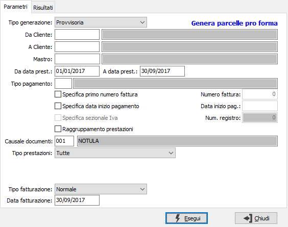
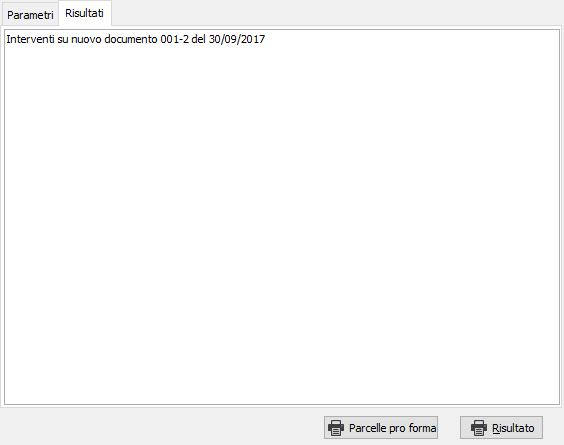

Generazione documenti di addebito
Il programma effettua la generazione dei documenti (parcelle definitive o pro forma) come specificato in configurazione, provvisoria o definitiva, utilizzando i dati dei movimenti esistenti in archivio in base ai parametri inseriti dall’utente.

TIPO GENERAZIONE: definisce il tipo di operazione da compiere: provvisoria oppure definitiva. La generazione provvisoria può essere effettuata più volte e non aggiorna nessuna tabella, ma genera soltanto la stampa di un brogliaccio; la generazione definitiva aggiorna le tabelle e per annullarla è necessario seguire una specifica procedura ed è consigliabile contattare il servizio Assistenza.
DA CLIENTE: codice del cliente, presente in anagrafica clienti, da cui si vuole iniziare la selezione. Confermando a vuoto, la selezione inizia dal primo cliente valido. Sul campo sono attive le funzioni di ricerca (F9).
A CLIENTE: codice del cliente, presente in anagrafica clienti, con cui si vuole terminare la selezione. Confermando a vuoto, la selezione termina con l'ultimo cliente valido. Sul campo sono attive le funzioni di ricerca (F9).
MASTRO: codice del mastro, presente nella tabella mastri, per cui si vuole effettuare la selezione. Confermando a vuoto vengono considerati validi tutti i mastri. Sul campo sono attive le funzioni di ricerca (F9).
DA DATA PRESTAZIONE: eventuale data del movimento da cui deve iniziare l'elaborazione relativamente ai precedenti parametri inseriti. Confermando a vuoto, la selezione inizia con il primo movimento valido.
A DATA PRESTAZIONE: eventuale data del movimento con cui si desidera terminare l’elaborazione relativamente ai precedenti parametri inseriti. Confermando a vuoto, la selezione si conclude con l'ultimo movimento valido.
TIPO PAGAMENTO: codice del tipo di pagamento, presente nella tabella tipi pagamento, per cui si vuole effettuare la selezione. Confermando a vuoto vengono considerati validi tutti i tipi di pagamento. Sul campo sono attive le funzioni di ricerca (F9).
SPECIFICA PRIMO NUMERO FATTURA: check box che abilita il campo successivo per specificare il numero con cui dovrà iniziare la fatturazione, casella con segno di spunta.
NUMERO FATTURA: campo abilitato solo se la casella precedente è spuntata; consente di inserire il numero con cui iniziare la fatturazione.
SPECIFICA DATA INIZIO PAGAMENTO: check box che abilita il campo successivo per specificare la data da cui iniziare a conteggiare le scadenze, casella con segno di spunta.
DATA INIZIO PAGAMENTO: campo abilitato solo se la casella precedente è spuntata; consente di specificare la data di partenza per il calcolo del piano di pagamento.
SPECIFICA SEZIONALE IVA: check box che abilita il campo successivo per specificare il numero di registro Iva su cui effettuare la fatturazione, casella con segno di spunta.
NUMERO REGISTRO: campo abilitato solo se la casella precedente è spuntata; consente di selezionare il numero di sezionale Iva di cui si intende generare le parcelle; vengono selezionate solo le causali di fatturazione che fanno riferimento a tale sezionale Iva.
CAUSALE PARCELLE: codice della causale, presente nella tabella causali parcelle, con cui si vuole effettuare la generazione delle parcelle. Sul campo sono attive le funzioni di ricerca (F9).
TIPO PRESTAZIONI: definisce la tipologia di movimento da cui generare parcelle: tutte, solo prestazioni riferite a progetto, solo prestazioni ricorrenti, solo prestazioni estemporanee.
DA PROGETTO: eventuale codice del progetto da cui si desidera iniziare la selezione dei movimenti. Confermando a vuoto, la selezione inizia con il primo progetto valido. Sul campo è attiva la ricerca (F9) sull’anagrafica progetti.
A PROGETTO: eventuale codice del progetto a cui si desidera terminare la selezione dei movimenti. Confermando a vuoto, la selezione termina con l’ultimo valido. Sul campo è attiva la ricerca (F9) sull’anagrafica progetti.
TIPO FATTURAZIONE: definisce la tipologia di fatturazione in relazione a quanto specificato sulla tabella clienti: normale, quindicinale o mensile.
DATA FATTURAZIONE: indica la data con cui deve essere effettuata la fatturazione. Nel caso in cui questa data sia precedente a quella indicata nel campo "a data" saranno considerati solo i movimenti fino alla data fatturazione.
La pressione sul pulsante Esegui determina l'inizio dell'elaborazione dei movimenti. Il risultato viene visualizzato nella pagina 'Risultati'.

Nella pagina vengono visualizzati i risultati dell'elaborazione; qui vengono indicati i documenti generati, se si sono verificati errori o ci sono dati non corretti nei documenti elaborati, viene indicato in questa sezione. La pagina dei risultati può essere stampata utilizzando l'apposito pulsante Risultato.
Con il pulsante Parcelle/Parcelle pro forma può essere eseguita direttamente la stampa dei documenti generati, se non ci sono stati errori.